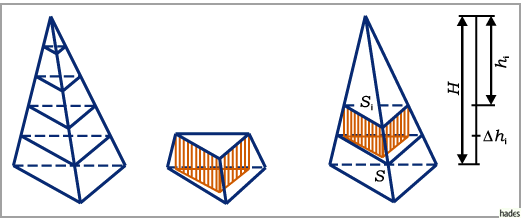
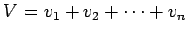
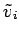
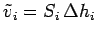
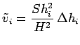
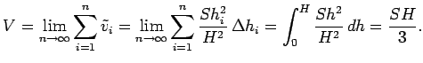

|
Berechnung des Rauminhalts einer Pyramide der Grundfläche S und der Höhe H (s. linke Abbildung):

-
Zerlegung des zu berechnenden Rauminhaltes V durch ebene Schnitte in Volumina dünner Pyramidenstümpfe (s. mittlere Abbildung): .
-
Ersetzen eines jeden Pyramidenstumpfes durch ein Prisma  mit der gleichen Höhe und einer Grundfläche, die gleich der oberen Grundfläche des Pyramidenstumpfes ist (s. mittlere Abbildung). Die Volumenabweichung ist eine infinitesimale Größe von höherer Ordnung als  .
-
Darstellung der Volumenformel in der Form , wobei hi der Abstand der oberen Fläche von der Pyramidenspitze ist. Wegen Si : S = hi2 : H2 kann man schreiben: .
-
Berechnung des Grenzwertes der Summe

|